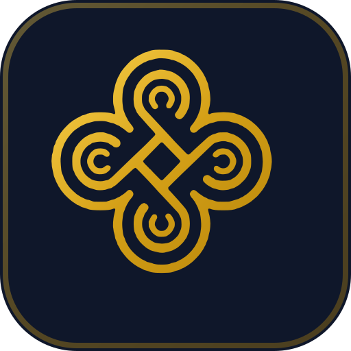
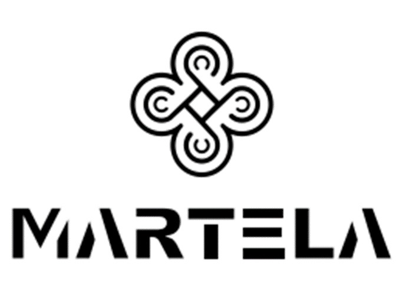
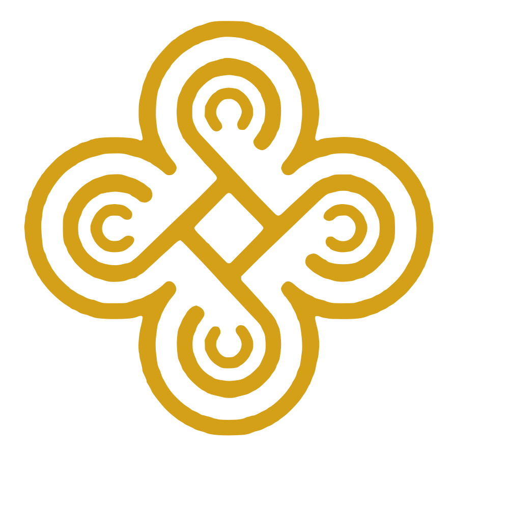

Suite completa de activos vectoriales (SVG) de ultra alta definición y favicon creados a partir del archivo original.

Pérdida de nitidez en ampliación y ruido grisáceo en bordes debido a la compresión JPEG.
Curvas Bezier matemáticamente perfectas, bordes ultrasuaves y peso optimizado.
Diseñado específicamente para barras de navegación, encabezados de módulo y prefacturas comerciales.
El nudo de cuatro lazos de Martela centrado matemáticamente con relación 1:1 para iconos, sellos y avatares.


Se incluyeron archivos en formato SVG dinámico (vectorial con degradado dorado), PNG multiplataforma (32x32, 192x192, 512x512) y favicon.ico tradicional para total compatibilidad.
| Ubicación y Archivo | Tipo | Uso Principal |
|---|---|---|
| assets/icons/favicon.svg | SVG | Favicon oficial moderno con degradado dorado y base contrastante |
| assets/icons/favicon.ico | ICO | Favicon multisize (16px, 32px, 48px) para compatibilidad universal |
| assets/icons/favicon.png / favicon-32.png | PNG | Favicon rasterizado para navegadores y atajos |
| assets/icons/apple-touch-icon.png / favicon-512.png | PNG | Iconos para iOS, Android y PWA en alta resolución |
| assets/brand/martela-logo.svg | SVG | Logotipo completo oficial vertical (Isotipo + Tipografía) |
| assets/brand/martela-horizontal.svg | SVG | Logotipo horizontal oficial (Isotipo + Tipografía a un costado) |
| assets/brand/martela-symbol.svg | SVG | Isotipo / emblema cuadrado suelto adaptable por CSS |
| assets/brand/martela-*-gold.svg / white.svg | SVG | Variantes pre-coloreadas en oro y blanco |